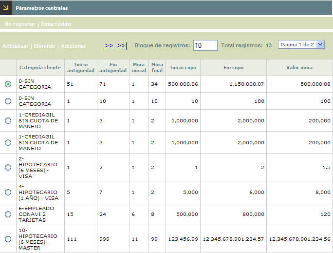
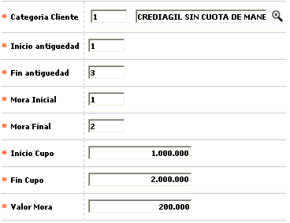
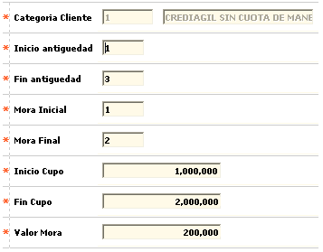
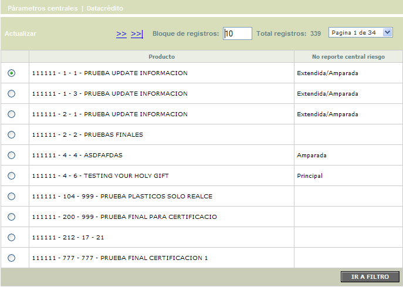
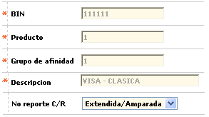
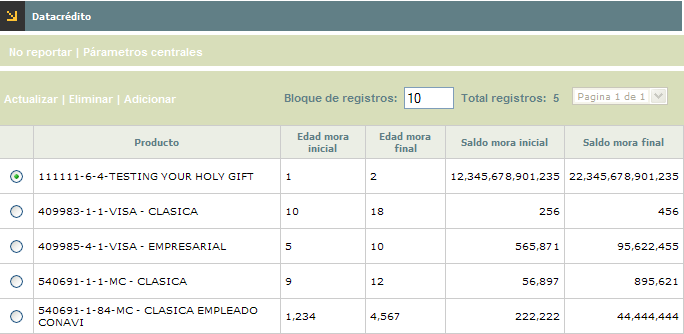
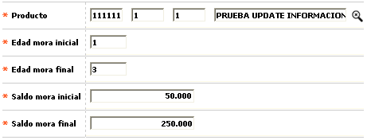
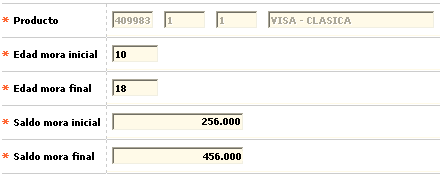

Parámetros centrales
Mediante este formulario se habilita el mantenimiento y consulta de la tabla que contiene la parametrización requerida por el sistema, para el envío de la información respecto de las obligaciones del cliente y su comportamiento crediticio a los entes de control y centrales de riesgo, a través de la interface correspondiente.

El formulario contiene las opciones Actualizar, Eliminar y Adicionar. Cuenta también con los hipervínculos No reportar y Datacrédito
Adicionar: Si el usuario invoca la opción Adicionar se despliega un nuevo formulario.

Descripción de campos
Categoría cliente |
Campo obligatorio con lista de valores de la cual se selecciona la Categoría asociada a los clientes cuya información será enviada a la central de riesgo. |
Inicio antiguedad |
En este campo numérico de 3 posiciones, obligatorio, se registra la cantidad de periodos (expresados en meses) deben transcurrir después de la activación, para enviar la información del cliente en la interface de centrales de riesgo. |
Fin antiguedad |
Campo numérico de 3 posiciones, obligatorio, en el cual se registra hasta cuántos períodos de activación (expresado en meses) se toma el rango para enviar la información del cliente en la interface de centrales de riesgo. |
Mora inicial |
En este campo numérico de 2 posiciones, obligatorio, se indica a partir de cuántos períodos de mora (expresados en meses) se debe enviar la información del cliente en la interface de centrales de riesgo. |
Mora final |
Campo numérico de 2 posiciones, obligatorio, en el que se registra hasta que altura de mora (expresada en meses) se debe enviar la información del cliente en la interface de centrales de riesgo. |
Inicio cupo |
Campo numérico de 14 enteros y 2 decimales, obligatorio, en el cual se indica el cupo total asignado al cliente a partir del cual se debe enviar la información en la interface de centrales de riesgo. |
Fin cupo |
En este campo numérico de 14 enteros y 2 decimales, obligatorio, se registra el rango final del cupo total asignado al cliente que se debe tener en cuenta para enviar la información en la interface de centrales de riesgo. |
Valor mora |
Campo obligatorio de 14 enteros y 2 decimales en el que se registra el monto que debe tener el saldo en mora del cliente a partir del cual se envía la información en la interface de centrales de riesgo. |
Actualizar: Si el usuario selecciona un registro e invoca la opción Actualizar se despliega un formulario en el cual el único campo NO modificable es la Categoría del cliente.


El formulario solo contiene la opción Actualizar.
Actualizar: si el usuario selecciona un registro e invoca la opción Actualizar se despliega un formulario en el cual el único campo modificable es No reporte C/R.

Descripción de campos
Bin / Producto / Grupo de afinidad |
Campos de salida en los que se muestra la combinatoria correspondiente al producto para el cual se está parametrizando la condición de no reporte a centrales de riesgo. |
Descripción |
En este campo de salida se despliega la descripción del producto anterior. |
No reporte C/R |
Campo tipo combo en el cual se puede seleccionar entre Principal, Extendida, Amparada, Extendida/Amparada o Todas el tipo de tarjetas que no viajan en la interfase correspondiente. Así, cuando se selecciona la opción Todas, lo que se le está indicando al sistema es que no envía ninguna de las tarjetas pertenecientes a ese producto. |

El formulario contiene las opciones Actualizar, Eliminar y Adicionar.
Adicionar: Si el usuario invoca la opción Adicionar se despliega un nuevo formulario.

Descripción de campos
Producto |
Campo obligatorio con lista de valores de la que se debe selecciona el producto para el cual se va a definir la manera como viaja la información en la interfase. |
Edad mora incial |
En este campo numérico de 5 dígitos, obligatorio, debe indicarse la edad de mora inicial (expresada en número de periodos) a partir de la cual se reporta a Datacrédito las obligaciones identificadas con el producto y cuyo monto esté incluido dentro del rango señalado. |
Edad mora final |
Campo numérico de 5 dígitos, obligatorio, en el que debe indicarse la edad de mora final (expresada en número de periodos) hasta la cual se reporta a Datacrédito las obligaciones identificadas con el producto y cuyo monto esté incluido dentro del rango señalado. |
Saldo mora inicial |
Campo numérico de 14 enteros y 2 decimales, obligatorio, en el que se registra el monto que como mínimo deben tener las obligaciones, del producto, por concepto de saldo en mora para ser reportadas a Datacrédito. |
Saldo mora final |
En este campo numérico de 12 enteros y 2 decimales, obligatorio, se indica el monto máximo que pueden tener las obligaciones, del producto, por concepto de saldo en mora para ser reportadas a Datacrédito. |
Actualizar: si el usuario selecciona un registro e invoca la opción Actualizar se despliega un formulario en el cual el único campo NO modificable es el Producto.

s="PARRAFO">